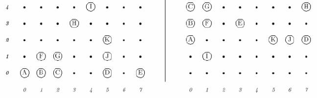

Problem C
2-D Nim
Input: standard input
Output: standard output
Time Limit: 1 second
The 2D-Nim board game is played on a grid, with pieces on the grid points. On each move, a player may remove any positive number of contiguous pieces in any row or column. The player who removes the last piece wins. For example, consider the left grid in the following figure.

The player on move may remove (A), (B), (A, B), (A, B, C), or (B,F), etc., but may not remove (A, C), (D, E), (H, I) or (B, G). For purposes of writing 2D-Nim-playing software, a certain programmer wants to be able to tell whether or not a certain position has ever been analyzed previously. Because of the rules of 2D-Nim, it should be clear that the two boards above are essentially equivalent. That is, if there is a winning strategy for the left board, the same one must apply to the right board. The fact that the contiguous groups of pieces appear in different places and orientations is clearly irrelevant. All that matters is that the same clusters of pieces (a cluster being a set of contiguous pieces that can be reached from each other by a sequence of one-square vertical or horizontal moves) appear in each. For example, the cluster of pieces (A, B, C, F, G) appears on both boards, but it has been reflected (swapping left and right), rotated, and moved. Your task is to determine whether two given board states are equivalent in this sense or not.
The first line of the input file contains a single integer t (1<=t<=12), the number of test cases, followed by the input data for each test case. The first line of each test case consists of three integers W, H, and n (1 <=W, H <=100). W is the width, and H is the height of the grid in terms of the number of grid points. n(n<=3000) is the number of pieces on each board. The second line of each test case contains a sequence of n pairs of integers xi, yi, giving the coordinates of the pieces on the first board (0 =< xi < W and 0 =< yi< H). The third line of the test case describes the coordinates of the pieces on the second board in the same format.
Your program should produce a single line for each test case containing a word YES or NO indicating whether the two boards are equivalent or not.
2 8 5 11 0 0 1 0 2 0 5 0 7 0 1 1 2 1 5 1 3 3 5 2 4 4 0 4 0 3 0 2 1 1 1 4 1 3 3 3 5 2 6 2 7 2 7 4 8 5 11 0 0 1 0 2 0 5 0 7 0 1 1 2 1 5 1 3 3 6 1 4 4 0 4 0 3 0 2 1 1 1 4 1 3 3 3 5 2 6 2 7 2 7 4
|
YES NO |
Problem Source: Iranian
Contest